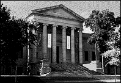

|
Visit  Bringing Art to Life for Everyone!
Location
Admission & Parking
Hours
Visitors with Special Needs
Information
AmenitiesArtsBreak Coffee Shop offers a beautiful and relaxing spot to take a break while visiting the Institute. Located on the main floor, it offers a spectacular view of the downtown skyline and a full selection of Starbucks coffees. Patrons can also enjoy a wide selection of desserts, baked goods and sandwiches. ArtsBreak is open daily during museum hours and closes 30 minutes prior to museum closing. ArtsCafé Restaurant takes cafeteria-style dining to a new level with an eclectic menu of soups, salads, sandwiches, homemade bread and desserts. Located on the mezzanine level of the Institute, ArtsCafé is open Tuesday through Saturday from 11:30 a.m. to 2:30 p.m. and Sunday from noon to 3 p.m. The Family Center was created in the Spring of 1998 as a special resource for families with young children. The center includes a snack area, nursing room, stroller park, activity area with tables and chairs, interactive computer programs, soft sculptures and games. Open during regular museum hours. Find out more about the Family Center The Museum Shop sells gifts from around the world, including selections for children, reproductions from the Institute's permanent collection, a wide variety of books and jewelry. The shop is open during regular museum hours and will ship purchases anywhere in the world. For more information call (612) 870- 3100, or toll free (888) MIA-ARTS (642-2787) and ask for the Museum Shop. The Museum Library is a noncirculating research and reference library with a 45,000 volume collection of books and resources on art history and the museum's permanent collection. The library is open to the public from noon to 5 p.m. Tuesday, Wednesday, Friday and Saturday and from noon to 8 p.m. Thursday. Herschel V. Jones Print Study Room is available for visitors to examine prints from the Institute's permanent collection that are not currently on view. The room in open to the public by appointment only, Tuesday through Friday, 10 a.m. to noon and 1:30 p.m. to 4:30 p.m. For an appointment call (612) 870- 3105. |